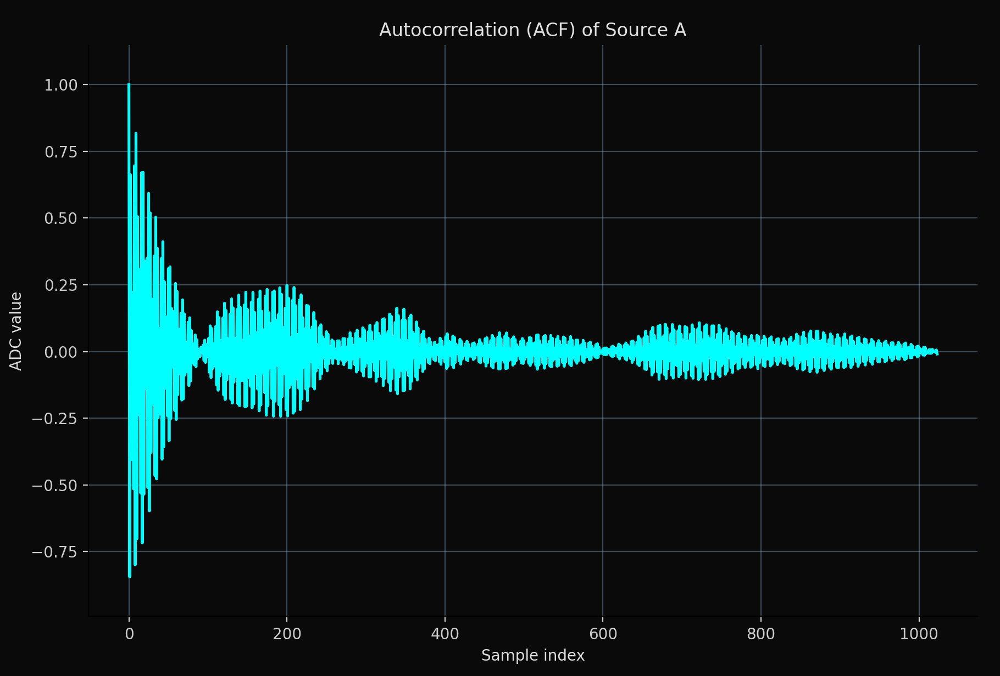
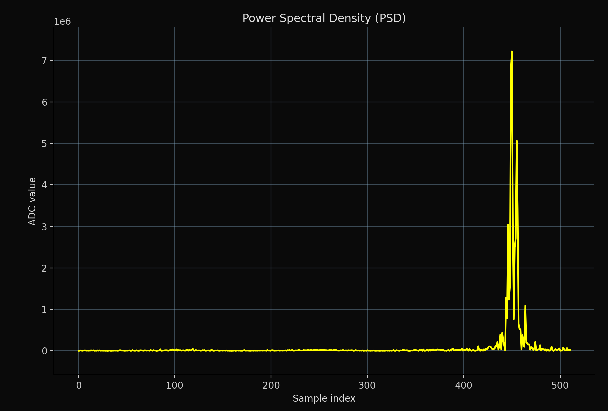
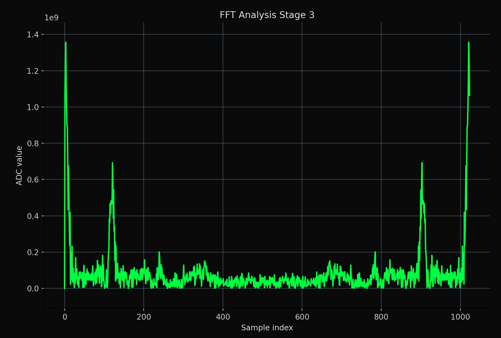
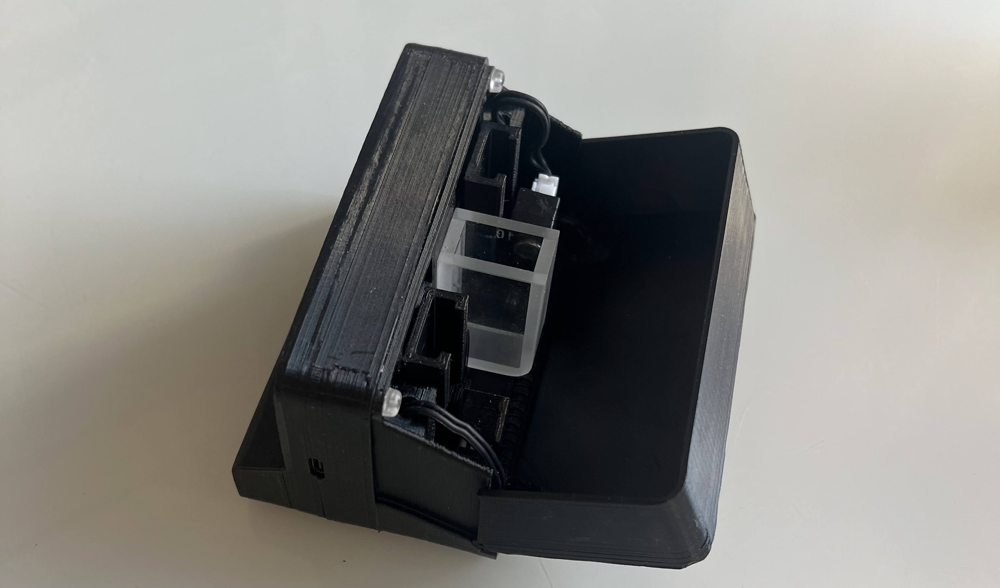
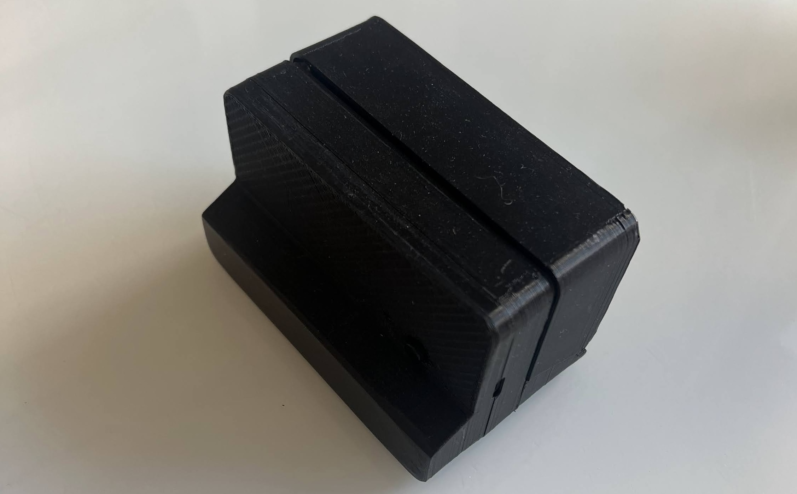
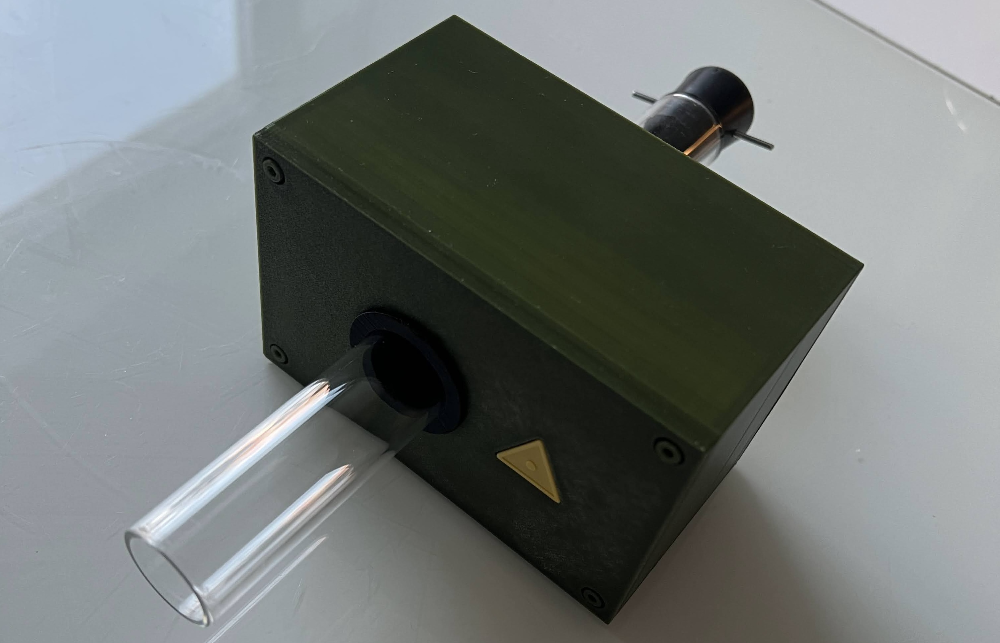
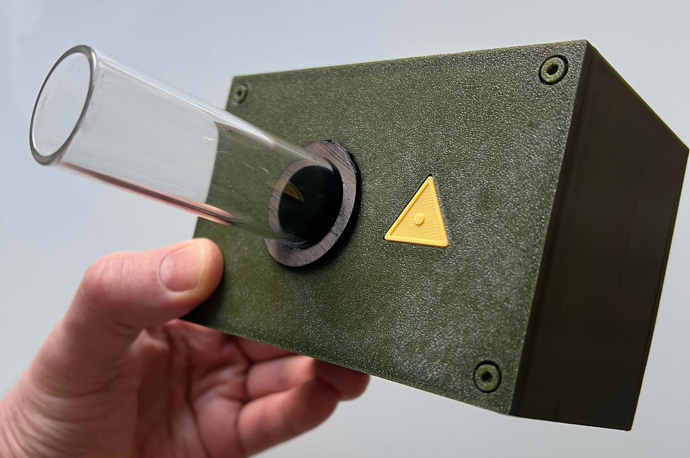

DLS (Dynamic Light Scattering) & LASCA (Laser Speckle Contrast Analysis)
AI-driven mathematical analysis of spectra for precise measurement extraction.
AI Spectral Analysis



Machine learning models analyze optical spectra to detect composition, impurities, and process drift instantly — no reagents, no manual sampling.


Gen I — Static Analyzer
Laboratory and winery batch spectral analysis. Volatile acid, conversion of malic acid, and Brettanomyces measurements.


Gen II — Inline Flow Sensor
Continuous spectral monitoring directly in pipelines.
Real-time water quality tracking for industrial greenhouses:
instant detection of bacteria and viruses in the flow.
Scaling Agricultural Innovation Agrotech
We are actively seeking strategic investors and partners to accelerate the development of our optical sensing solutions.
Focus: Expanding into the industrial greenhouse sector, ensuring global food security through real-time pathogen detection.